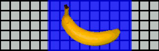
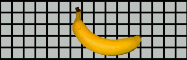

You can debug the application on the development computer,
with the application running in ADL. You can also debug the application
on the iPhone.
Some AIR functionality that is not supported on the iPhone is
still available when testing an application using ADL (on the development
computer). Be aware of these differences when testing content on
the desktop. For more information, see
ActionScript 3.0 APIs unsupported on mobile devices
.
Debugging the application on the development computer
To
debug the application on the development computer using Flash Professional CS5:
 Choose Debug > Debug Movie > In AIR Debug Launcher
(Mobile).
Choose Debug > Debug Movie > In AIR Debug Launcher
(Mobile).
You can also debug the application by
calling ADL from the command line. This is the syntax:
adl –profile mobileDevice appDescriptorFile
Replace
appDescriptorFile
with
the path to the application descriptor file.
Be sure to include
the
-profile mobileDevice
option.
Debugging the application on the iPhone
To
debug the application on the iPhone:
-
Compile the application
with debug support:
-
Install the application on the iPhone.
-
On the iPhone, turn Wi-Fi on and connect to the same network
as that of the development computer.
-
Start a debug session on your development computer. In Flash
Professional CS5, choose Debug > Begin Remote Debug Session >
ActionScript 3.0.
-
Run the application on the iPhone.
The debug version
of the application will prompt you for the IP address of the developer
computer. Enter the IP address and tap the OK button. To obtain
the IP address of the development computer.
-
On Mac
OS, on the Apple menu, choose System Preference. In the System Preferences
window, click the Network icon. The Network preferences window lists
the IP address.
-
On Windows, start a command-line session and run the
ipconfig
command.
The
debug session displays any
trace()
output from
the application.
When debugging an application installed
on the iPhone, Flash Professional CS5 supports all debugging features,
including breakpoint control, stepping through code, and variable
monitoring.
Debugging with GPU rendering diagnostics
The
GPU rendering diagnostics feature lets you see how the application
uses hardware acceleration (for applications that use GPU rendering
mode). To use this feature, compile the application using the PFI
tool on the command line, and include the
-renderingdiagnostics
option:
pfi -package -renderingdiagnostics -target ipa-debug -connect ...
The
-renderingdiagnostics
flag
must directly follow the
-package
flag.
The
GPU rendering diagnostic feature displays colored rectangles for
all display objects:
-
Blue—The display object is
not a bitmap or cached as a bitmap, and it is being rendered.
If
blue appears repeatedly for a display object that is not changing,
it could be because it intersects with moving display objects. For
example, the display object may be a background for moving display
objects. Consider caching the display object as a bitmap.
If
blue appears for an object that you think should be cached, it may
be because the object is using an effect that the GPU cannot apply.
These effects include certain blend modes, color transforms, the
scrollRect
property, and
masks.
The application also displays blue if display objects
uploaded to the GPU exceed the memory limits.
The application
logs messages for each blue rectangle. The application outputs these
messages along with other
trace()
and debug output messages.
-
Green—The display object is a bitmap or cached as a bitmap,
and it is being uploaded to the GPU for the first time.
If
green appears repeatedly for a display object, then the code in
the application is recreating the display object. For example, this
can occur if the timeline returns to a frame that creates the display
object. Consider modifying the content to prevent re-creation of
identical objects.
-
Red—The display object is a bitmap or cached as a bitmap,
and it is being re-uploaded to the GPU.
Red appears every
time such a display object changes in a way that requires the application
to re-render the bitmap representation. For example, if a 2D object
that does not have the
cacheAsBitmapMatrix
property
set, it is re-rendered when it is scaled or rotated. Re-rendering
also occurs when child display objects move or change.
Each
colored rectangle fades after four screen redraw cycles, provided
the reason for the coloration does not occur again during those
cycles. However, if there are no changes onscreen, the diagnostic
coloring does not change.
For example, consider a bitmap display
object (a banana) in front of a vector background that is not cached
as a bitmap. When the banana first renders, it is colored green.
When the background first renders, it is colored blue:
As
the banana moves, the CPU must re-render the background, causing
the blue shading to appear over the background:

The blue
shading over the background reflects redrawn regions that need to
be sent to the GPU.
However, if the background is cached as
a bitmap, when the banana moves, the rendering diagnostic feature
displays no colored tints:

The diagnostic
feature displays no colored tints since the GPU retains the background
bitmap. The GPU can composite the banana with the background without
involving the CPU.
Suppose the banana is a 2D display object
that does not have its
cacheAsBitmapMatrix
property
set. Whenever the display object rotates (or scales), the rendering
diagnostic feature displays red. This indicates that the application
has to upload a new version of the display object to the GPU: